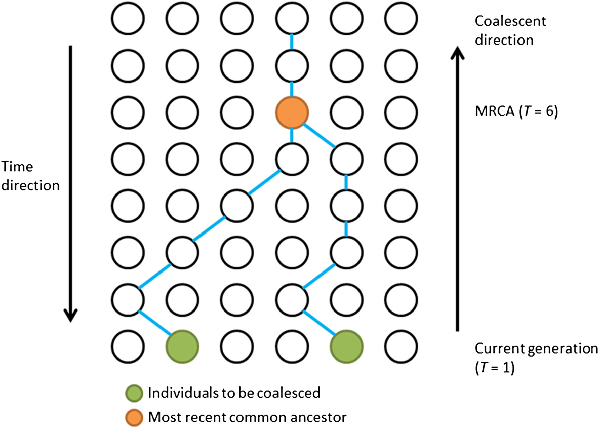

Pairwise Sequentially Markovian Coalescent Model
Bruno Vieira | @bmpvieira

Disclaimer
What is the PSMC?
PSMC result

What is it used for?
Effect of climate changes
Discover unexpected population bottlenecks
Detect the time of divergence between populations
What I've been doing?
Reproducing published results to master PSMC


What I intend to do?
Use PSMC to answer some evolutionary questions
Is the effective population size in solitary insects > social?
Experimental design
Run PSMC across a wide range of social insects and their solitary relatives


How does it work (theory)?
PSMC
Short answer: I don't know!
Long answer: I can try to explain...
History
Watterson, 1975
Generating the genealogical relationship between k sampled sequences from a population with constant size N and no recombination
Coalescent theory

Coalescent theory with recombination
Ancestral Recombination Graph (ARG)
Spatial approach
Along the chromosome instead of back in time
Recombination events that occur on the ARG
1. Recombination in ancestral material;
2. Recombination in non-ancestral material that has ancestral material to both sides;
3. Recombination in non-ancestral material that has ancestral material only to the left;
4. Recombination in non-ancestral material that has ancestral material only to the right;
5. Recombination in an individual that carries no ancestral material.
Recombination events that occur on the ARG
Spatial approach by Wiuf and Hein, 1999
1. Recombination in ancestral material;
2. Recombination in non-ancestral material that has ancestral material to both sides;
3. Recombination in non-ancestral material that has ancestral material only to the left;
4. Recombination in non-ancestral material that has ancestral material only to the right;
5. Recombination in an individual that carries no ancestral material.
Sequential Markov Coalescent
Markov chain

Pairwise Sequential Markov Coalescent
Demographic inference using composite approximate likelihood (diCal)
"New coalescent-based method that can efficiently infer population size changes from multiple genomes, providing access to a new store of information about the recent past."
http://simons.berkeley.edu/sites/default/files/docs/1213/slidesmailund.pdf
http://simons.berkeley.edu/sites/default/files/docs/1213/slidesmailund.pdf
http://simons.berkeley.edu/sites/default/files/docs/1213/slidesmailund.pdf
How does it work (practice)?
Install
$ git clone https://github.com/lh3/psmc.git
$ cd psmc
$ make
$ cd utils
$ make
Run
$ psmc -o diploid.psmc diploid.psmcfa
$ utils/psmc_plot.pl diploid diploid.psmc
Parameters
Usage: psmc [options] input.txt
Options: -p STR pattern of parameters [4+5*3+4]
-t FLOAT maximum 2N0 coalescent time [15]
-N INT maximum number of iterations [30]
-r FLOAT initial theta/rho ratio [4]
-c FILE CpG counts generated by cntcpg [null]
-o FILE output file [stdout]
-i FILE input parameter file [null]
-T FLOAT initial divergence time; -1 to disable [-1]
-b bootstrap (input be preprocessed with split_psmcfa)
-S simulate sequence
-d perform decoding
-D print full posterior probabilities
Parameters
Usage: psmc_plot.pl [options] <out.prefix> <in.psmc>
Options: -u FLOAT absolute mutation rate per nucleotide [2.5e-08]
-s INT skip used in data preparation [100]
-X FLOAT maximum generations, 0 for auto [0]
-x FLOAT minimum generations, 0 for auto [10000]
-Y FLOAT maximum popsize, 0 for auto [0]
-m INT minimum number of iteration [5]
-n INT take n-th iteration (suppress GOF) [20]
-M titles multiline mode [null]
-f STR font for title, labels and tics [Helvetica,16]
-g INT number of years per generation [25]
-w INT line width [4]
-P STR position of the keys [right top]
-T STR figure title [null]
-N FLOAT false negative rate [0]
-S no scaling
-L show the last bin
-p convert to PDF (with epstopdf)
-R do not remove temporary files
-G plot grid
Thank you!
 Bruno Vieira | @bmpvieira
Bruno Vieira | @bmpvieira
 Yannick Wurm | @yannick__
Yannick Wurm | @yannick__
© 2014 Bruno Vieira CC-BY 4.0